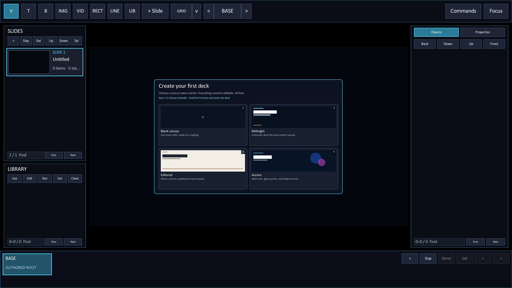

Get started
Create your first deck.
Build the command-line program or the macOS app. Open Studio. Choose a starter, then save the source file.
Build Rayslides
Rayslides requires Zig 0.16.x. The minimum supported version is Zig 0.16.0.
# Build an optimized executable.
zig build -Doptimize=ReleaseSafe
# Open Studio without a deck.
zig-out/bin/rayslidesThe build places the executable at zig-out/bin/rayslides.
Put the development build on PATH on Linux
On Linux, including Omarchy, create an absolute symlink in your user bin directory to run Rayslides from any working directory:
mkdir -p ~/.local/bin
ln -s "$PWD/zig-out/bin/rayslides" ~/.local/bin/rayslidesKeep the complete zig-out tree after building. Linux resolves the executable through the symlink, so Rayslides can still find adjacent installed resources such as zig-out/share/rayslides/nvim when Neovim support is enabled. Rebuilding updates the target while the symlink keeps working. Ensure ~/.local/bin is on PATH.
Add the optional Neovim editor
On Linux or macOS, compile in the embedded Neovim overlay with -Dneovim=true. Neovim itself must be installed; Rayslides finds nvim on PATH and in common package-manager and user-local locations.
# Build Rayslides with Neovim support.
zig build -Dneovim=true -Doptimize=ReleaseSafe
# Open a deck in Studio.
zig-out/bin/rayslides --studio talk.sldThe enabled build includes the Rayslides syntax runtime and JetBrains Mono for the rendered editor grid. Supported emoji use the same bundled monochrome Noto Emoji fallback as slide text. It does not bundle the Neovim executable. The default -Dneovim=false build keeps the built-in field editors and has no Neovim runtime requirement.
At launch, --neovim-path=PATH tries a specific executable first, --neovim-font=PATH selects the primary grid font, and --neovim-font-size=PIXELS accepts sizes from 10 through 48. Use --neovim-clean when a user configuration or plugin prevents startup.
For the macOS app, pass the same option to the app build: zig build -Dneovim=true -Doptimize=ReleaseSafe macos-app.
Learn how to open, apply, and close the embedded editor.
Build the macOS app
On macOS, build the Rayslides app with the macos-app step.
# Build the app bundle.
zig build -Doptimize=ReleaseSafe macos-app
# Open the app.
open zig-out/Rayslides.appThe build places the app at zig-out/Rayslides.app. It also keeps the command-line executable.
The app opens .sld files from Finder. You can also drop a deck onto its window.
The local build is not notarized. Another Mac can require one right-click and Open before normal launches work.
Read the complete macOS app notes.
Choose a starter
Rayslides opens the new-deck chooser when you omit the file name.

.sld source.| Starter | Use it when | What it creates |
|---|---|---|
| Studio | You want the signature Rayslides dark look. | Two cinematic navy layouts with cyan and amber accents. |
| Folio | You want an elegant light deck. | Two editorial ivory layouts with a cobalt publishing grid. |
| Ember | You want warmth and personality. | Two expressive aubergine layouts with coral and gold energy. |
| Signal | You want maximum graphic impact. | Two bright layouts built from acid lime, ultramarine, and ink. |
Try every starter without restarting. Choose one, then press Cmd/Ctrl + Z to return to the pristine chooser. Choose a different starter, or press Shift + Cmd/Ctrl + Z before another edit to restore the deck.
Save the deck
- Press Cmd/Ctrl + S.
Choose a path for the new deck.
- Enter a file name.
Rayslides adds the
.sldextension when it is missing. - Continue editing.
The same shortcut saves later changes with an atomic file update.
Rayslides does not overwrite an existing file during the first save. Choose another name when a file exists.
Open an existing deck
Pass the deck path to present it. Add --studio to start in the editor.
# Present the deck.
zig-out/bin/rayslides talk.sld
# Edit the deck in Studio.
zig-out/bin/rayslides --studio talk.sld
# Use the development build step.
zig build run -- talk.sldMake a small deck by hand
Create hello.sld with this source.
@slide
@bg color=#07111fff
@box x=120 y=160 w=1680 h=160 fontsize=84 color=#f7fbffff text=Hello, Rayslides
@box x=120 y=390 w=1300 h=100 fontsize=36 color=#61dafbff text=The file is the deck.Run zig-out/bin/rayslides hello.sld to present it.